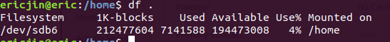
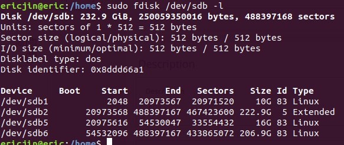

记一次在
ubuntu重新挂载/home到另外的分区的经历（/home目录下已经存在文件）。
查看
/home目录的挂载情况$ df .

当然，现在已经是挂载在了另外一个分区下面了，之前我的/home 是挂载在根目录下’\‘。
之后是建立分区
$ sudo fdisk /dev/sdb Welcome to fdisk (util-linux 2.31.1). Changes will remain in memory only, until you decide to write them. Be careful before using the write command. Command (m for help): m ## 可以列出所有的帮助选项Generic ... F list free unpartitioned space l list known partition types n add a new partition ## 建立一个新的分区 p print the partition table ....
使用 n 新建一个分区，之后就是分区的类型和分区的大小了。
如果按q所有的操作都无效，直接退出了。要真正建立分区，操作之后按w退出保存

- 之后是给分区建立文件系统
/dev/sdb6 这个是刚才自己建立的分区。-t ext4给这个分区建立的文件系统类型。
$ sudo mkfs -t ext4 /dev/sdb6
建立好文件系统以后，直接先随意把这个分区挂载当一个新建的文件夹(
/mnt)下面，然后把/home目录下的文件和所有属性全部都复制到/mnt文件夹下面$ sudo mount /dev/sdb6 /mnt $ sudo rm -rf /mnt/* $ sudo cp -rp /home/* /mnt ## -p 非常重要，就是为了把所有的属性（权限，所有者，时间等等）一起复制过来/home的文件现在都被复制到了/mnt的挂载下来，现在再把挂载重新放到/home目录下面去$ sudo umount /dev/sdb6 /mnt $ sudo mount /dev/sdb6 /home
现在你看/home目录下，就有了所有的文件，同时用 df .去查看文件系统信息，可以看到它已经挂载到了/dev/sdb6上面了。
但这个时候还没完，这样手动挂载上去，一旦重启，又没有了，必须要永久挂载，在系统启动的时候系统自动挂载上去。
这个时候就需要修改/etc/fstab里面的内容了。
$ sudo vi /etc/fstab
然后在文件末尾加上这样一行就行了：
# <file system> <mount point> <type> <options> <dump> <pass>
/dev/sdb6 /home ext4 defaults 0 0
第一列
：文件系统的名字 第二列
：挂载点 第三列
：文件系统的类型 第四列
：文件系统的参数，这个我们直接设置成默认就好了 第五列
：是否备份的指令 第六列
：是否以fsck 检验分区磁盘 加上以后，我们用
df -TH看一下有没有挂载好。之后就可以重启看一下挂载的情况了。
我开始没有中间的复制到/mnt的过程，就直接把分区挂载到了/home目录下，这导致了我开机登录的时候无限登录，没办法登录进去。然后在命令登录终端([Ctrl]+[Alt]+[F2]~[F6])把/etc/fstab的文件改回来以后才能够正常登录的。